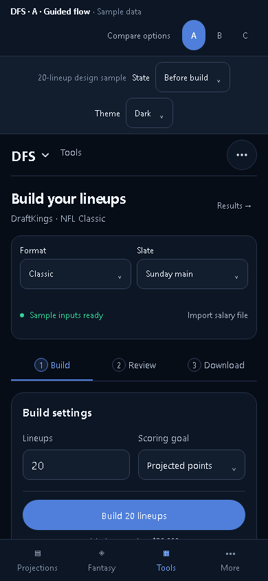
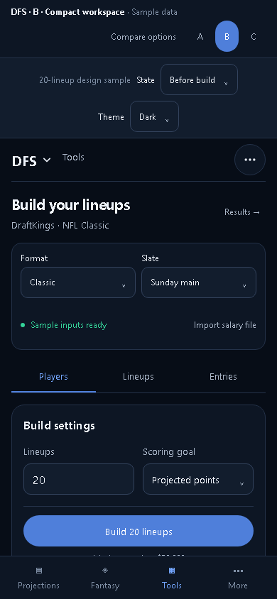
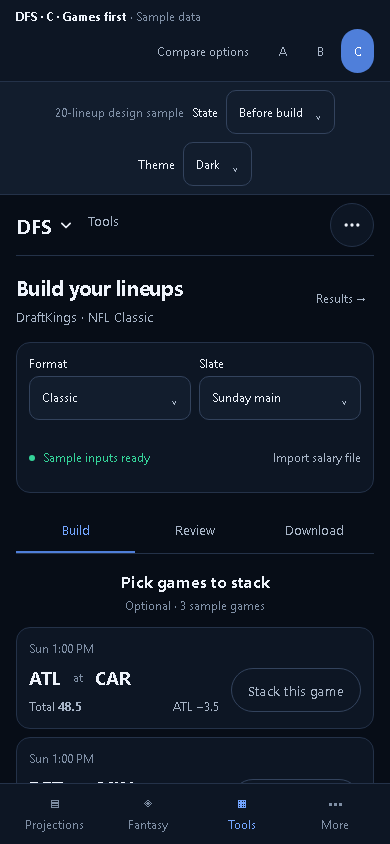

A simpler way to build.
Same advanced features. Three ways to arrange them.
Option A
Guided flow
One step at a time. Start with a quick build; open player choices and rules when you need them.

Try A →Option BCompact workspace
Players and settings side by side. A familiar workspace with a short path to review and download.

Try B →Option CGames first
Start with the games. Pick stacks visually, then refine players and build your set.

Try C →Use Before build / After build to compare states. All figures are samples.